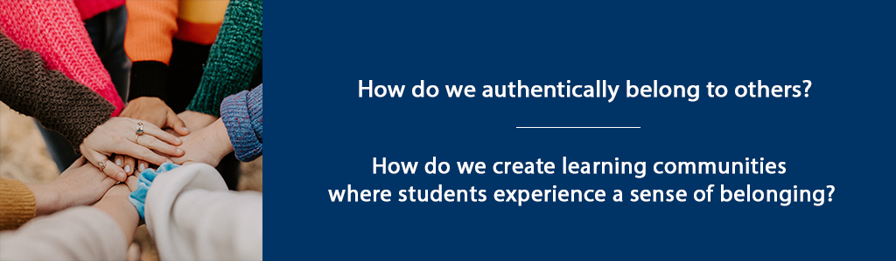

Overview
Building on our discussion of “belonging to ourselves” in the previous unit, in this unit we will explore the concept of “belonging to others.” This key concept is foundational to the creation of authentic learning communities – spaces where students experience genuine connection with other learners, with the facilitator, and with the discipline they are studying.
Unit 3 focuses on two guiding questions:
- How do we authentically belong to others?
- How do we create learning communities where students experience a sense of belonging?
Topics
- Belonging to Others
- Creating Learning Spaces Where Students Belong
Unit Learning Outcomes
When you have completed this unit you should be able to:
- Discuss how we can authentically belong to others.
- Describe elements of a learning community that create a sense of belonging.
- Identify problems that affect learning communities.
- Plan a learning activity that builds community.
Learning Activities
Here is a checklist of learning activities you will benefit from in completing this unit. You may find it helpful in planning your work.
3.1 Belonging to Others
In Braving the Wilderness: The Quest for True Belonging and the Courage to Stand Alone, Brene Brown (2017) discusses the universal human need for belonging – and the importance of belonging authentically. She contrasts a true sense of “belonging” to “fitting in” which she describes as a sense of being accepted, but not as one’s true self.
We want to be part of something, but we need it to be real – not conditional or fake or constantly up for negotiation. We need true belonging. – Brene Brown (2017, p. 31)
According to Brown (2017), belonging involves a certain level of vulnerability, because it means we are must show up as our true selves – and those selves often include some level of doubt or weakness or insecurity.
She defines “belonging” this way:
Belonging is the innate human desire to be part of something larger than us. Because this yearning is so primal, we often try to acquire it by fitting in and by seeking approval, which are not only hollow substitutes for belonging, but often barriers to it. Because true belonging only happens when we present our authentic, imperfect selves to the world, our sense of belonging can never be greater than our level of self-acceptance – (Brown, 2017, p. 32).
Part of our role as teachers and facilitates or to foster learning communities where students can truly belong.
3.2 Creating Learning Spaces Where Students Belong
Learning, by its nature, requires us to wrestle with ideas and facts and theoretical perspectives that are new or contradict our current knowledge or beliefs. Therefore, learning spaces must serve as spaces where we can be challenged by new ideas and challenge our current thinking, while at the same time feel confident that our thoughts and perspective are valued. These learning spaces must simultaneously allow us to be our authentic selves – and allow others to be authentic as well.
Brene Brown (2017) discusses key concepts of creating spaces that facilitate a sense of belonging – including civility, inclusive language, truth, and respect. Often, the balance between truth and civility can be challenging – as we seek to authentically discuss new ideas – but in a manner that is both civil and respectful of others.
Trust is at the heart of authentic learning communities. Brown (2017) uses the acronym “BRAVING” to describe key elements of trust. These elements include Boundaries, Reliability, Accountability, Vault, Integrity, Non-Judgement, and Generosity (p. 114).
Palmer (2017) also argues that spaces free of fear are necessary for authentic learning. He describes a “shutdown” that occurs as we seek to protect ourselves – both teachers and students – and as we think about learning and knowing in from an either-or perspective, failing to acknowledge the great vastness of truth. Learning communities, then, must be places of trust, with a focus on learning that incorporates both “profound truth” and “paradox” (Palmer, 2017, p. 65).
Brower and Dettinger (1998) contend that diversity of thought and perspective is an essential element of a learning community. “When we define a community as a group of individuals committed to shared values and goals, who purposefully come together and work together to reach these goals, then diversity is encouraged not just for ideological reasons but also because different perspectives, experiences, and backgrounds contribute to the collaborative efforts to achieve the community’s goals” (Brower & Dettinger, 1998, p. 16).
3.2.1 Activity: Reflection
3.2.2 Activity: Read and Reflect
3.2.3 Activity: Listen and Reflect
Summary
In this unit, you have had the opportunity to consider concepts related to our own sense of “belonging to others” and what it means to create safe learning spaces, built on trust and an awareness that learning is both vast and paradoxical. Bringing our selves to the educational experience – both as teachers/facilitators and as students/learners, we must seek to authentically engage in the learning experience – and to form connections with other learners. In the next unit, we will move from the philosophical and self-reflective to explore practical strategies for creating authentic learning communities.
Assessment
Please submit your assignments in the appropriate dropbox in Moodle. See the Assessment section for the Grading Criteria that explains how your assignments will be evaluated.